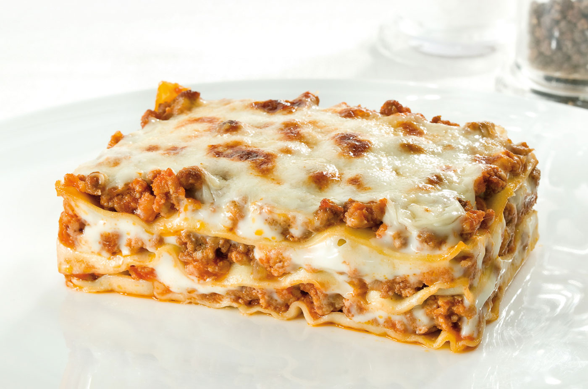

Lasagna

Lasagna alla Bolognese: a traditional italian dish.
Ingredients
- 3 eggs
- 400g flour
- 400g spinach
- 150g bacon
- 700g mixed grounded beef
- 90g butter
- 1/2 glass white wine
- 300g tomato puree
- 1 celery
- 1 carrot
- 1 onion
- 2 tablespoons tomato concentrate
- coarse salt
- black pepper
- bechamel